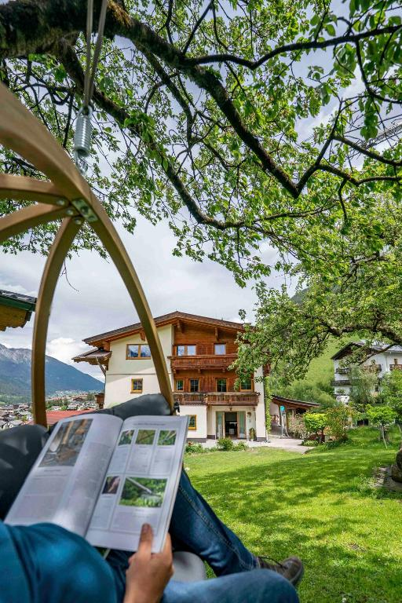
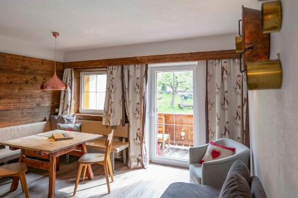
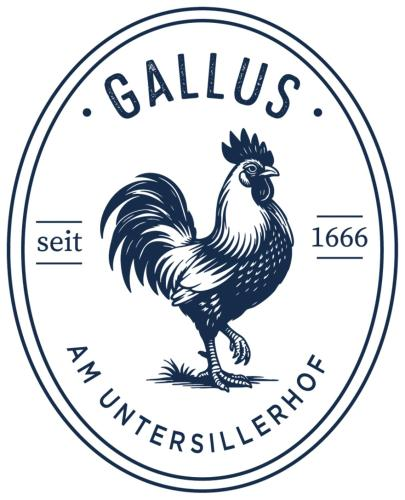
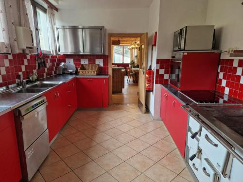
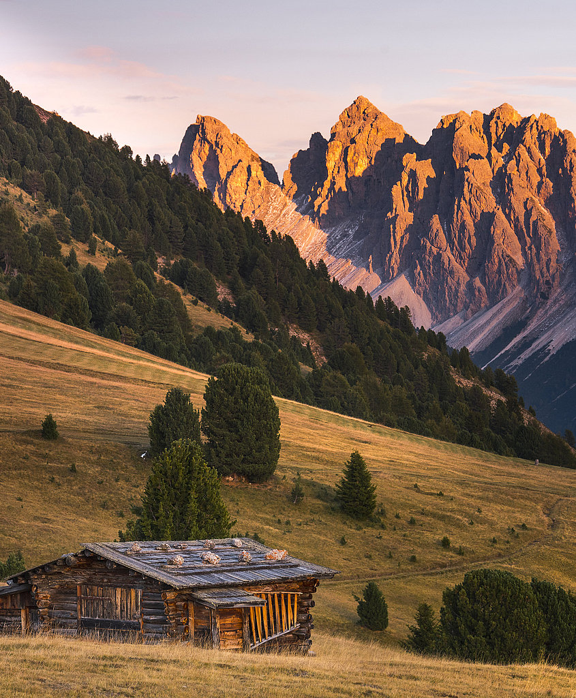
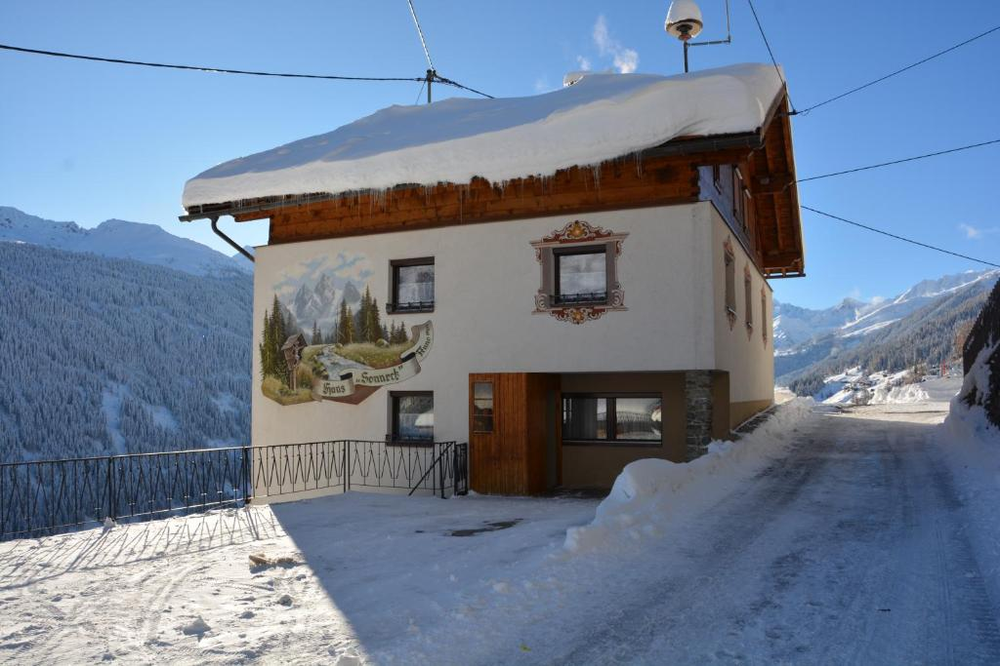
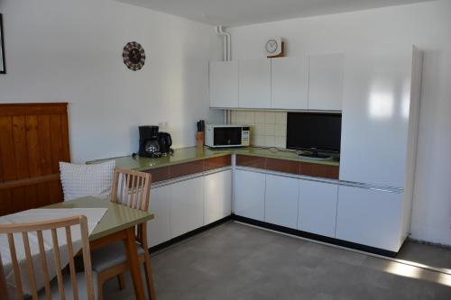
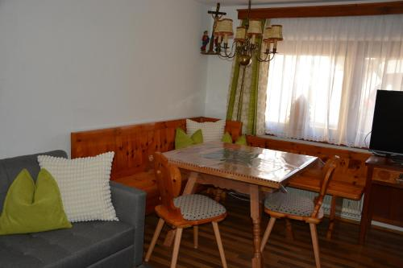
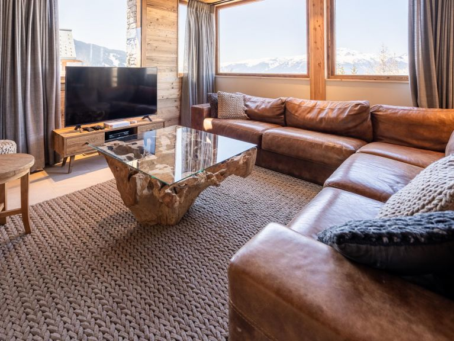

Every price is a real quote for 10 adults pulled through the booking calendar on the stated dates — not an indicative “from” rate. Totals per person exclude food and drink. Each option links to the ski-area cards below.
Getting there
The ÖBB Nightjet runs Amsterdam → Innsbruck every night, turning two travel days into two nights of sleep and removing flights and ski-bag fees. For the short Austrian trips: board Wednesday evening, ski from Thursday morning.
Wed
19:00
Amsterdam C — NJ 421
Thu
09:14
Innsbruck · valley bus
Thu–Sun
3.75 days
on snow from ~11:00 Thu
Sun
20:30
Innsbruck — NJ 420
Mon
10:00
Amsterdam C
No car is needed for any surviving option. That matters: a 9-seater from
Innsbruck runs €87–123 a day, ten adults need two vehicles anyway, and winter tyres are mandatory — roughly
€40–70 per person that none of these options has to pay.
France is the exception on timing. Eurostar Snow runs direct, Amsterdam
Centraal 05:24 → Bourg-Saint-Maurice 14:41, but Saturdays only in both directions — so France
is a full Sat–Sat week or nothing. 9 h 17 m, one train, no night travel.
The options
1
€55pp / night



Cheapest that works
Getting to the slopes each day
No car needed. Regiobus 590–593 runs the whole valley every 15 min, Innsbruck → Mieders → Fulpmes → Neustift → Stubai Glacier. Timetable valid 24 Oct 2026 – 18 Apr 2027, daily.
Free in-valley with a ski pass or simply carrying ski gear · €4.70 each way on the Innsbruck leg
House
€1,659
3 bedrooms · 130 m² · sleeps 10
Lift pass
Stubai Skipass 4 days €267.90 — glacier + Schlick 2000 + Serles + Elfer
Travel
Nightjet couchette ≈ €150–220 return
≈14 h overnight + ~45 min bus
Snow certainty
High
Glacier on the same pass — snow is not in question in either window
Total per person
€595–665
excl. food
Ski storageFree valley ski bus
Cheapest option that actually works. The catch is space: 3 bedrooms and 130 m² for ten adults is genuinely tight.
Price source: Booking.com · quoted 19 Nov 2026
2
Panorama-Ferienhaus im Stubaital
Mieders, Stubaital, Tirol
Thu 21 – Sun 24 Jan 2027 · 3 nights · 3.75 ski days
€65pp / night



Best rooms
Getting to the slopes each day
No car needed. Serlesbahnen is a named stop on the 590–594 line, 3–4 min away. Schlick 2000 12–15 min, the glacier further up the same line, every 15 min.
Free in-valley with a ski pass or ski gear · €4.70 each way on the Innsbruck leg, or free on SKI plus CITY
House
€1,944
5 double bedrooms · 5 bathrooms · 160 m² · rated 9.8
Lift pass
Stubai Skipass 4 days €267.90
Travel
Nightjet couchette ≈ €150–220 return
≈14 h overnight + ~50 min bus
Snow certainty
Moderate
Doorstep hill is low (982–1,750 m); the reliable skiing is a bus ride up the valley
Total per person
€620–690
excl. food
Sauna5 bathroomsMountain viewBarbecueFree valley ski bus
Five double bedrooms and five bathrooms is the best sleeping layout found for ten adults anywhere on this page. Free cancellation to 22 Dec. Sold out for every March window.
Price source: Booking.com · quoted 19 Nov 2026
3
Untersillerhof — full week
Neustift im Stubaital, Tirol
Sat 13 – Sat 20 Mar 2027 · 7 nights · 6 ski days
€44pp / night
Best value per ski day
Getting to the slopes each day
No car needed. Same 590–593 valley bus, every 15 min, daily through 18 Apr 2027.
Free in-valley with a ski pass or ski gear
House
€3,102
3 bedrooms · 130 m² · sleeps 10
Lift pass
Stubai Skipass 6 days €355
Travel
Nightjet couchette ≈ €150–220 return
≈14 h overnight + ~45 min bus
Snow certainty
High
March needs the glacier — which this pass covers
Total per person
€825–895
excl. food
Ski storageFree valley ski busLowest €/night of the season
The lowest per-night price in the whole sweep and 6 ski days instead of 4 — more total spend, far better value per day. Caveat: the Nightjet is disrupted from 8 Feb by the Deutsches Eck closure.
Price source: Booking.com · quoted 19 Nov 2026
4
Panorama Apartments Walter
Ortisei, Val Gardena, Dolomites
Sat 23 – Sat 30 Jan 2027 · 7 nights · 6 ski days
€69pp / night



The Dolomites option
Getting to the slopes each day
No car needed. The La Curta escalator is 50 m away and climbs to the Seceda cable car and Rasciesa funicular. Skibus lines 4 and 5 run roughly every 40 min, ~08:05–18:25.
Free with the Val Gardena Guest Pass — note the Dolomiti Superski pass is not valid on buses
House
€4,816
2 apartments in one building · 5 + 5
Lift pass
Dolomiti Superski 6 days €407 — late Jan is the cheaper tier; mid-March is high season at €453
Travel
Nightjet + Brenner train + bus ≈ €200–290 return
≈20 h door to door
Snow certainty
Moderate
No glacier and a modest top station; heavy snowmaking carries it, but March softens
Total per person
€1,090–1,180
excl. food
Sella Ronda50 m to the liftDolomiti SuperskiSki bus at the door
The only real Dolomites quote for ten in any target week — and it is two apartments, not one house. No single Dolomites unit sleeping ten was bookable. At nine people, a single 4-bedroom flat at Cristlpek in Ortisei drops to €59 pp/night.
Price source: MUSE · quoted 19 Nov 2026
5
€70pp / night



Most terrain
Getting to the slopes each day
No car needed. Bus line 10 stops at “Bergbahn” by the Kappl gondola and carries on to Ischgl in 12–15 min. Winter timetable 26 Nov 2026 – 11 Apr 2027, daily; first run 08:05.
Free with a ski pass or personalised guest card plus ski gear
House
€2,100
5 bedrooms · 3 bathrooms · 150 m² · sleeps 10
Lift pass
Silvretta Skipass 4 days €315 (Ischgl + Kappl + Galtür + See) · Kappl & See only €260
Travel
Nightjet to Landeck-Zams + bus ≈ €150–220 return
≈14 h overnight + ~40 min bus
Snow certainty
High
Kappl tops at 2,618 m and Ischgl at 2,872 m — both reliable in January and March
Total per person
€675–745
excl. food
Ischgl on the same pass5 bedroomsFree ski bus
The most skiing of any Austrian option here — 239 km at Ischgl on the same pass. Dearer than Stubai and the terrain is red-heavy, so it suits a confident group.
Price source: Booking.com · quoted 19 Nov 2026
6
Chalet De Vallandry — La Charrue
Vallandry, Paradiski / Les Arcs, France
Sat 23 – Sat 30 Jan 2027 · 7 nights · 6 ski days
€166pp / night



Easiest travel
Getting to the slopes each day
Lift and piste 300 m on foot, in a car-free chalet park. No resort shuttle needed.
n/a — no 2026/27 Vallandry shuttle timetable found; the 300 m claim is the operator's own
House
€1,160 pp incl. lift pass
10 people · 5 bedrooms · 3 bathrooms · 145 m²
Lift pass
Included — 6-day Les Arcs pass, plus linen, cleaning, water and tourist tax
Travel
Eurostar Snow direct ≈ €130–190 return
9 h 17 m, one direct train — no night travel
Snow certainty
Very high
70% of Paradiski is above 2,000 m with two glaciers above 3,000 m — the most reliable here
Total per person
€1,290–1,350
excl. food
Private spaSaunaTurkish steam roomOpen fireCar-free parkLift pass included
Easiest journey by far: one train, Amsterdam 05:24 → Bourg-Saint-Maurice 14:41. The price bundles the pass. But it is the dearest per person, and all four March Saturdays are sold out. The advertised “from €623” is an April price.
Price source: Chalet.nl · quoted 19 Nov 2026
The ski areas
Stubaier Gletscher
Stubaital, Tirol · glacier
65 kmGlacier
38.9 km blue23.2 km red2.9 km black
+ 30.6 km ski routes
Altitude
1,695 – 3,210 m
Snowmaking
Glacier — not published as a %
Lifts
26
Season
9 Oct 2026 – 17 May 2027
Sources disagree on total km: 65 (skiresort, TUI) vs 110 (bahn.de, an outlier).
Official site →
Schlick 2000
Fulpmes, Stubaital
25 km
13.5 km blue8 km red3.5 km black
+ 2.7 km ski routes
Altitude
1,000 – 2,240 m
Snowmaking
90% of pistes
Lifts
9–11
Season
28 Nov 2026 – 11 Apr 2027
Reported range 22–28.5 km across sources.
Official site →
Serlesbahnen Mieders
Stubaital · small local hill
5.7 km
2.8 km blue2.9 km red0 km black
Altitude
982 – 1,750 m
Snowmaking
78% of pistes
Lifts
5
Season
19 Dec 2026 – 14 Mar 2027
Low and small. Useful as a doorstep hill, not as the week's skiing. Season dates unconfirmed.
Official site →
Elferlifte Neustift
Stubaital · small local hill
2.5 km
0 km blue2.5 km red0 km black
+ 3.5 km ski routes
Altitude
981 – 2,080 m
Snowmaking
Not published
Lifts
3
Season
19 Dec 2026 – 7 Mar 2027
All-red mini-area; known more for tobogganing and ski touring.
Official site →
Kappl
Paznaun, Tirol
45.5 km
10 km blue26 km red6 km black
+ 7 km ski routes
Altitude
1,181 – 2,618 m
Snowmaking
≈75% of pistes
Lifts
10
Season
11 Dec 2026 – 4 Apr 2027
Grew from 42 km for 2026/27. Red-dominated — not a beginners' hill.
Official site →
Silvretta Arena Ischgl–Samnaun
Paznaun, Tirol / Graubünden
239 km
47 km blue140 km red52 km black
+ 15 km ski routes
Altitude
1,360 – 2,872 m
Snowmaking
≈95% of pistes · ~1,200 guns
Lifts
45
Season
26 Nov 2026 – 2 May 2027
On the same Silvretta pass as Kappl, 12–15 min away by the valley bus.
Official site →
Val Gardena / Gröden
Dolomites · Sella Ronda · Dolomiti Superski
181 km
52 km blue108 km red21 km black
Sella Ronda circuit ≈44 km · Dolomiti Superski ≈1,200 km on one pass
Altitude
1,236 – 2,518 m
Snowmaking
Operator claims a 100% snowmaking guarantee
Lifts
79
Season
4 Dec 2026 – 4 Apr 2027
No glacier and a modest top altitude — south-facing slopes soften in March. New Steger Dellai 8-seat chair for 2026/27.
Official site →
Les Arcs / Peisey-Vallandry
Paradiski, France
200 km
104 km blue70 km red26 km black
Paradiski total 425 km with La Plagne
Altitude
1,200 – 3,226 m
Snowmaking
362 ha equipped with guns (Paradiski)
Lifts
52
Season
12 Dec 2026 – 24 Apr 2027
70% of Paradiski lies above 2,000 m and it has two glaciers above 3,000 m — the most snow-sure area on this page. Blue-heavy, so good for mixed abilities. New Télévillage 10-seat gondola.
Official site →
Checked and rejected
Three properties looked good on price and rating but failed on location. All three were listed by platforms as near skiing when they are not.
Chalet in Stubaital by Ski Slope & Sauna
Neustift im Stubaital
It is the Herzebenalm, a hut on an alpine pasture in the Pinnistal. Its own listing says the property cannot be reached by private vehicle, and the host shuttle runs only 1 May – 15 Oct. A guest review describes arriving in deep winter as “no easy feat” and walking up and down daily. The “on the slope” claim refers to a toboggan run; there is no lift.
Chalet Glauninger
Ramsau am Dachstein — not Schladming
The address is Vorberg 383, 8972 Ramsau am Dachstein: the plateau above Schladming, which is principally a cross-country area (100 km classic) with a small 12.9 km alpine hill at Rittisberg, 1,035–1,636 m. Not a Planai base. The “2.3 km from Schladming” figure came from a search card and was wrong. Also 183 min from Innsbruck by road.
Bauernhaustirol “Peerhof”
Navis, Wipptal
Rated 4.94 from 90 reviews and genuinely cheap at €63 pp/night, but its own listing sells it for “hiking, mountain biking, snowshoeing or ski tours, tobogganing”. No lift, no piste, no ski bus — nearest lift is Bergeralm, a 13-minute drive. A guest review notes it is “a little far from skiing”.
When
| Window | Traffic | Availability found |
|---|---|---|
| Thu 21 – Sun 24 Jan | Quiet | All surviving Austrian houses available. Cheapest tier of the season. |
| Sat 13 – Sat 20 Mar | Quiet | Untersillerhof at its season-low €44 pp/night. The other Stubai houses are sold out. |
| Sat 23 – Sat 30 Jan | Quiet | The Dolomites and France weeks. Most Austrian houses already gone. |
| Ruled out — 30 Jan unavailable. | ||
| 4 – 23 Feb | Peak | Carnival 8–9 Feb. Seven countries' holidays overlap. Prices up 40–90%. |
What the research found
Short midweek stays are bookable after all. Chalet agencies are almost
entirely Saturday-to-Saturday, which looked like a hard blocker. Booking.com and Airbnb inventory is not —
every January price here is a real 3-night Thursday-to-Sunday quote.
Thursday–Sunday beats Friday–Monday on price as well as ski days.
Check both platforms for the same house. One chalet came back €2,466 vs
€2,689 on one pair of dates and €2,286 vs €2,304 on another — the cheaper platform flipped. Booking also
returned €2,445 and €2,689 for identical dates minutes apart. Treat any figure as ±10%.
No single Dolomites house for ten was bookable in any target week. That
inventory is weekly and largely gone. The Val Gardena option is two apartments in one building.